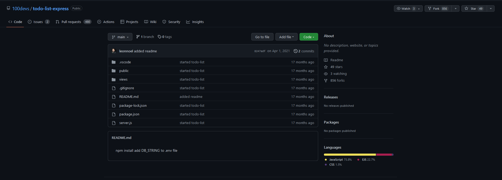
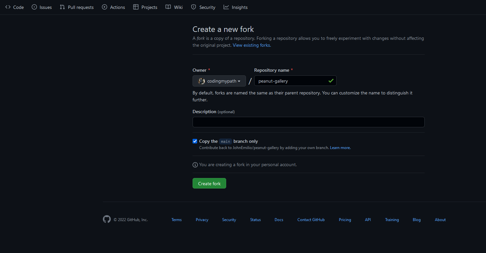
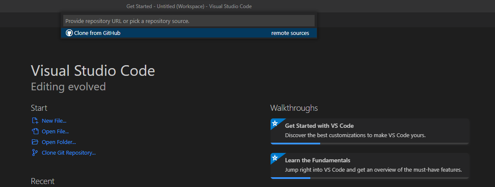
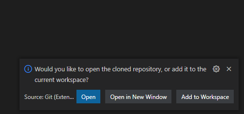
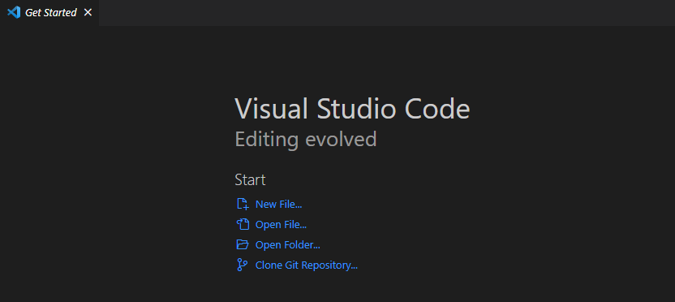
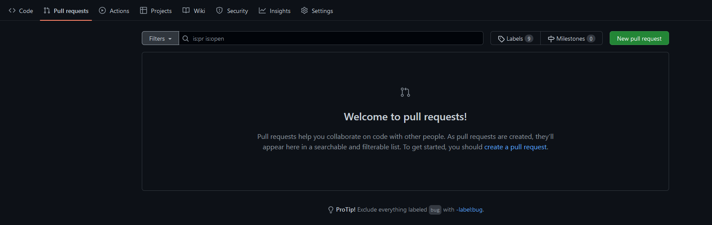

GitHub
How to fork code on GitHub
- Go to the repo and click on the Fork which is located on the top right 
- Set repository name and click "create fork" 
- Open VS Code to clone it
- Save it on your local computer
- Select repository location 
- Click Open 
There are 2 ways to clone it. You can clone it by using the terminal and typing:
git clone github.com/...
The second way is by clicking Clone Git Repository
Create a new branch after forking code
Create a Pull Request
- Go to the repo and click on Pull requests
- Click on the green New pull request button on the top right 
Add Folder/Files to a new GitHub Repo
- Create a new repository on GitHub
- Enter git init on the terminal
- Add the files in your new local repository. This stages them for the first commit.
git init
git add .
https://opensource.com/article/19/7/create-pull-request-github
https://rogerdudler.github.io/git-guide/